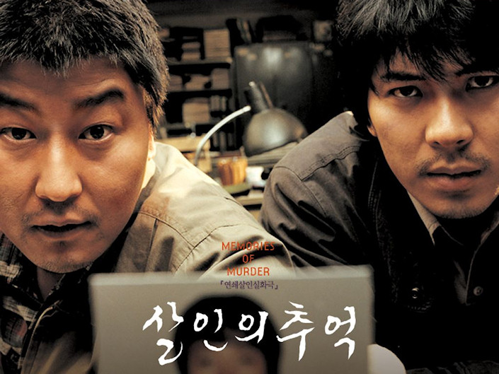

Bong Joon-ho 2003-as krimithrillere. Egyszerűen fantasztikus.

In 1986, in the province of Gyunggi, in South Korea, a second young and beautiful woman is found dead, raped and tied and gagged with her underwear. Detective Park Doo-Man and Detective Cho Yong-koo, two brutal and stupid local detectives without any technique, investigate the murder using brutality and torturing the suspects, without any practical result. The Detective Seo Tae-Yoon from Seul comes to the country to help the investigations and is convinced that a serial-killer is killing the women. When a third woman is found dead in the same “modus-operandi”, the detectives find leads of the assassin.
https://www.youtube.com/watch?v=NtOutxGJK5o
Song Kang-ho zseniálisat alakít, hihetetlen, hogy mennyire jó.
A film profin felépített, nagyon tense és hallatlanul megrázó. Egészen kiváló alkotás.